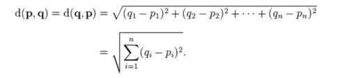
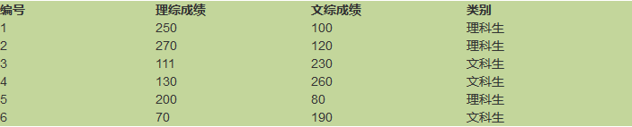
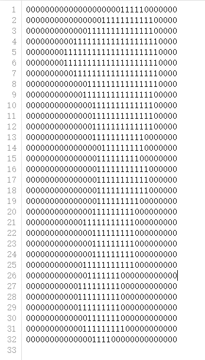
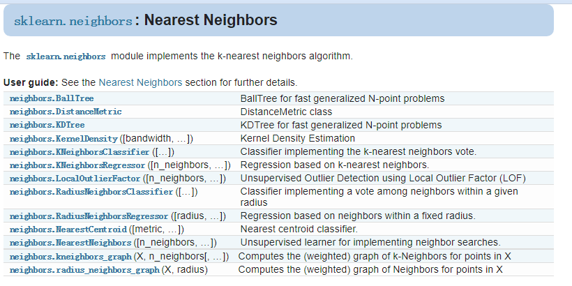
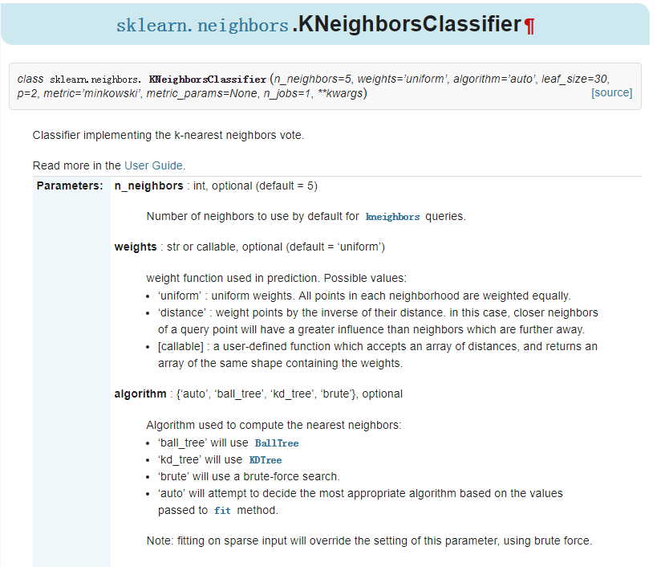
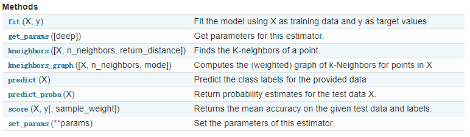

前言
第一次比较整体的完成机器学习实践，参考了许多网络资料。要能独立写出来还需要锻炼；python有很多细致的东西还不了解；sklearn与numpy还没有掌握。但的的确确体会到了机器学习的乐趣，期待下一次的学习 (^v^)
实验介绍
1.实验内容
本实验首先使用基于Python实现kNN算法实现手写字识别，然后使用sklearn库的kNN算法实现手写字识别。
2.实验目标
通过本实验掌握kNN算法的原理，熟悉kNN算法如何应用在真实世界问题中，同时掌握sklearn机器学习库的使用。
3.实验知识点
- kNN算法
- sklearn库的使用
4.实验环境
- python 3.6.5
- sklearn 0.19.1
- CourseGrading在线实验环境
5.预备知识
- 初等数学知识
- Linux命令基本操作
- Python编程基础
- kNN算法原理
实验原理
1.kNN算法简介
k近邻法(k-nearest neighbor, kNN)是1967年由Cover T和Hart P提出的一种基本分类与回归方法。它的工作原理是：存在一个样本数据集合，也称作为训练样本集，并且样本集中每个数据都存在标签，即我们知道样本集中每一个数据与所属分类的对应关系。输入没有标签的新数据后，将新的数据的每个特征与样本集中数据对应的特征进行比较，然后算法提取样本最相似数据(最近邻)的分类标签。一般来说，我们只选择样本数据集中前k个最相似的数据，这就是k-近邻算法中k的出处，通常k是不大于20的整数。最后，选择k个最相似数据中出现次数最多的分类，作为新数据的分类。
2.kNN算法流程
a.计算已知类别数据集中的点与当前点之间的距离；
b.按照距离递增次序排序；
c.选取与当前点距离最小的k个点；
d.确定前k个点所在类别的出现频率；
e.返回前k个点所出现频率最高的类别作为当前点的预测分类。
Sklearn简介
Scikit learn 也简称sklearn，是机器学习领域当中最知名的python模块之一。sklearn包含了很多机器学习的方式：
- Classification 分类
- Regression 回归
- Clustering 非监督分类
- Dimensionality reduction 数据降维
- Model Selection 模型选择
- Preprocessing 数据与处理
使用sklearn可以很方便地让我们实现一个机器学习算法。一个复杂度算法的实现，使用sklearn可能只需要调用几行API即可。所以学习sklearn，可以有效减少我们特定任务的实现周期。
实验准备
下载kNN_basic_writing.tgz 提取码：zh0b到指定目录下，然后再依次选择点击上方的File->Open->Upload,上传刚才下载的数据集压缩包，再使用如下命令解压：
1 | !tar -zxvf kNN_hand_writing.tgz |
数据集目录下有两个子目录：trainingDigits和testDigits
- trainingDigits为训练数据集的文件，文件数量为1935；
- testDigits为测试数据集的文件，文件数量为947。
每个文件的命名格式都为“真实数字_编号.txt”。为了简便处理，实验中，用txt文本文件表示图片。原图片中像素值为黑色（0,0,0）的像素点在txt中对应的用0表示，像素值为白色（255,255,255）的像素点用1表示。所以，只需要处理这些文本文件即可，不用再去解析图片格式。每个txt文件中，数据共有32行和32列，这是由于原图片的大小为32X32。
框架
现在我们开始基于kNN搭建手写字识别系统，由于数据集已经准备好了，所以省去了机器学习项目流程中的数据收集和数据预处理的工作，直接进入算法设计和实现阶段，即kNN的分类函数。该函数实现完毕后，我们先加载训练集数据，然后验证测试集数据中的数据类别。根据验证结果，得到算法的误差率。
接下来的实验步骤将引导你一步一步编写出基于kNN实现的手写字识别系统。首先引入我们系统需要用到的Python的相关库。
1 | import numpy as np |
其中，numpy为Python的数值计算扩展库，operator为操作符扩展库，listdir提供了可以查看目录文件列表的函数。
实现kNN核心算法
如前所述，kNN算法流程如下：
a.计算已知类别数据集中的点与当前点之间的距离；
b.按照距离递增次序排序；
c.选取与当前点距离最小的k个点；
d.确定前k个点所在类别的出现频率；
e.返回前k个点所出现频率最高的类别作为当前点的预测分类。
在kNN.py中，添加一个函数classify0作为kNN算法的核心函数，该函数的完整形式为：
def classify0(inX, dataSet, labels, k):
其中各个参数的含义如下:
- inX - 用于要进行分类判别的数据(来自测试集)
- dataSet - 用于训练的数据(训练集)
- lables - 分类标签
- k - kNN算法参数,选择距离最小的k个点
在上述参数列表中，dataSet为所有训练数据的集合，也就是表示所有已知类别数据集中的所有点，dataSet为一个矩阵，其中每一行表示已知类别数据集中的一个点。inX为一个向量，表示当前要判别分类的点。按照上述算法流程，我们首先应该计算inX这个要判别分类的点到dataSet中每个点之间的距离。dataSet中每个点也是用一个向量表示的，点与点之间的距离怎么计算呢？没错，就是求两向量之间的距离，数学上，我们知道有很多距离计算公式，包括但不限于：
- 欧氏距离
- 曼哈顿距离
- 切比雪夫距离
- 闵可夫斯基距离
- 标准化欧氏距离
- 马氏距离
- 夹角余弦
- 汉明距离
- 杰卡德距离& 杰卡德相似系数
- 信息熵
这里，我们选择最简单的欧式距离计算方法。设p和q为两向量，则两向量间的欧氏距离为：

Exercise 1：实现kNN分类函数（2分）
在算法流程，输入参数含义，以及距离计算公式都明确了以后，按照kNN算法的流程，我们就可以实现kNN算法了。这里，推荐使用numpy提供的各种功能来实现该算法，相比于自己纯手写各种线性代数变换操作，使用numpy的效率要高的多。
这是本实验的第一个练习，请根据下述代码中classify0函数的参数，编写实现kNN分类算法的代码。
提示：距离度量方式可使用欧式距离。
1 | def classify0(inX, dataSet, labels, k): |
classify0函数的完整实现如上所示，计算过程中用到很多numpy的特性。注意argsort返回的是原始下标排序后的下标序列。
至此，kNN的算法就已经写完了。接下来，我们用个小例子验证一下kNN算法，随机挑选的6位高中生，分别让他们做文科综合试卷的分数和理科综合试卷的分数，下表为分数以及分类信息。

直觉上，理科生的理综成绩比较高，文综成绩较低，文科生的文综成绩较高，理综成绩较高。基于这些信息，我们利用kNN算法判断成绩为（105,210）所属的分类，代码实现如下：
1 | dataSet=np.array([[250,100],[270,120],[111,230],[130,260],[200,80],[70,190]]) |
运行结果如下显示“文科生”，输出结果结果比较符合预期。
加载手写字训练集数据
Exercise 2：实现手写数字训练集数据中的单个文件加载函数（4分）
接下来，我们将加载手写字训练集数据，由于kNN核心算法中，每个点都是用向量表示的。尽管已经转换为文本形式了，不过图片数据依然是32X32的二维数据格式，首先需要将其转换为一维数组，即表示成一个向量。
以下函数img2vector用于将32X32的二维数组转换为一维数组，该函数传入参数文件名，返回转换后的一维数组。
请实现img2vector函数。
1 | def img2vector(filename): |
Exercise 3：实现所有数据集的加载（4分）
接下来，我们编写loadTrainingData函数，加载所有训练集数据。
loadTrainData函数将返回表示训练集数据的矩阵以及每个点对应的分类标签，请实现该函数。
1 | def loadTrainData(): |
使用测试数据集验证分类算法
最后，我们来验证一下我们的kNN手写字识别算法的准确性，测试使用的数据集位于目录testDigits下。测试的流程为：依次读取testDigits目录下的每个文件，根据文件中的数据，使用分类函数classify0确定其分类，并和其真实分类进行对比，如果一致，表示分类正确，如果不一致，表示分类错误。统计错误的数量，计算错误率，错误率为分类出错的数量除以测试集中测试数据总量。编写kNNHandWrittenTest函数测试基于kNN算法实现的手写字识别系统准确性，该函数的实现代码如下图所示。第46行的errorCount变量用于记录分类出错的样本数量，第47行获取标签数据和训练集数据，第53行到第64行使用测试集数据进行测试。依次读取testDigits目录下的每个文件，根据文件名称获取其真实分类数字，然后使用classify0函数基于kNN算法进行分类，对比两个分类结果。如果不一致，就对errorCount自增1。
1 | def handwritingClassTest(): |
最后，添加main入口，调用kNNHandWrittenTest函数，对手写字识别系统进行验证。上述代码的输出结果如下所示：
1 | if __name__ == "__main__": |
7_17.txt分类返回结果为7 真实结果为7
7_86.txt分类返回结果为7 真实结果为7
….
1_86.txt分类返回结果为7 真实结果为1
我找了一个错误数据给大家看一下

比较胖的1。。。。
….
9_16.txt分类返回结果为9 真实结果为9
4_37.txt分类返回结果为4 真实结果为4
总共错了12个数据
错误率为0.012685%
可以看到测试总数据量为946，出错的数据量为12，错误率为0.012685%。上述代码中使用的k为3，你可以将k的数量进行调整，观察k的值和错误间的联系。
sklearn的kNN算法介绍
sklearn.neighbors模块实现了k-近邻算法，点击官网英文文档点击官网中文文档地址，在sklearn官网上查看sklearn的kNN算法的详细使用手册。内容如下图所示。

我们使用sklearn.neighbors.KNeighborsClassifier也可以是实现上小节，我们实现的k-近邻算法。KNeighborsClassifier函数一共有8个参数，如下图所示。

KNneighborsClassifier参数说明：
- n_neighbors：默认为5，就是k-NN的k的值，选取最近的k个点。
- weights：默认是uniform，参数可以是uniform、distance，也可以是用户自己定义的函数。uniform是均等的权重，就说所有的邻近点的权重都是相等的。distance是不均等的权重，距离近的点比距离远的点的影响大。用户自定义的函数，接收距离的数组，返回一组维数相同的权重。
- algorithm：快速k近邻搜索算法，默认参数为auto，可以理解为算法自己决定合适的搜索算法。除此之外，用户也可以自己指定搜索算法ball_tree、kd_tree、brute方法进行搜索，brute是蛮力搜索，也就是线性扫描，当训练集很大时，计算非常耗时。
- kd_tree，构造kd树存储数据以便对其进行快速检索的树形数据结构，kd树也就是数据结构中的二叉树。以中值切分构造的树，每个结点是一个超矩形，在维数小于20时效率高。ball tree是为了克服kd树高纬失效而发明的，其构造过程是以质心C和半径r分割样本空间，每个节点是一个超球体。
- leaf_size：默认是30，这个是构造的kd树和ball树的大小。这个值的设置会影响树构建的速度和搜索速度，同样也影响着存储树所需的内存大小。需要根据问题的性质选择最优的大小。
- metric：用于距离度量，默认度量是minkowski，也就是p=2的欧氏距离(欧几里德度量)。
- p：距离度量公式。在上小结，我们使用欧氏距离公式进行距离度量。除此之外，还有其他的度量方法，例如曼哈顿距离。这个参数默认为2，也就是默认使用欧式距离公式进行距离度量。也可以设置为1，使用曼哈顿距离公式进行距离度量。
- metric_params：距离公式的其他关键参数，这个可以不管，使用默认的None即可。
- n_jobs：并行处理设置。默认为1，临近点搜索并行工作数。如果为-1，那么CPU的所有cores都用于并行工作。
KNeighborsClassifier提供了以一些方法供我们使用，如下图所示:

接下来，我们说明如何基于sklearn的kNN实现手写字识别。
基于sklearn的kNN实现手写字识别
由于基于sklearn提供的kNN算法，修改kNNHandWrittenTest函数，将调用classify0的部分逻辑修改为sklearn提供的kNN接口。两个版本的其他部分的逻辑是完全一样的。具体修改的部分如下图红色框中的代码所示：
1 | def handwritingClassTest(): |
同时注意需要导入sklearn库的kNN算法
1 | from sklearn.neighbors import KNeighborsClassifier as kNN |
代码修改完毕后，运行代码，输出结果如下：
1 | if __name__ == "__main__": |
总共错了12个数据
错误率为0.012685%
错误率和上边相同
于是我验证一下两者判断能力是否相同，在对应的handwritingClassTest()我加入了wrongList.append(leNameStr)。得到如下结果：
自定义KNN: [‘5_42.txt’, ‘8_36.txt’, ‘8_11.txt’, ‘9_14.txt’, ‘5_43.txt’, ‘8_68.txt’, ‘8_45.txt’, ‘3_11.txt’, ‘8_23.txt’, ‘9_60.txt’, ‘9_68.txt’, ‘1_86.txt’]
基于sklearn的KNN: [‘5_42.txt’, ‘8_36.txt’, ‘8_11.txt’, ‘9_14.txt’, ‘5_43.txt’, ‘8_68.txt’, ‘8_45.txt’, ‘3_11.txt’, ‘8_23.txt’, ‘9_60.txt’, ‘9_68.txt’, ‘1_86.txt’]
结果上，完全相同。将K改为1，最终结果：总共错了12个数据，错误率为0.012685% 错误率保持
将K改为2，最终结果：总共错了21个数据，错误率为0.022199% 错误率上升
将K改为4，最终结果：总共错了16个数据，错误率为0.016913% 错误率上升
将K改为5，最终结果：总共错了18个数据，错误率为0.019027% 错误率上升
将K改为6，最终结果：总共错了22个数据，错误率为0.023256% 错误率上升
K取3是比较合理的
将weights改为distance时，我预测当K比较大时，会减小错误率
验证：
k=3,weights=’uniform’ 总共错了12个数据 错误率为0.012685%
k=3,weights=’distance’ 总共错了12个数据 错误率为0.012685% 错误率保持
k=4,weights=’uniform’ 总共错了16个数据 错误率为0.016913%
k=4,weights=’distance’ 总共错了10个数据 错误率为0.010571% 错误率下降
k=6,weights=’uniform’ 总共错了22个数据 错误率为0.023256%
k=6,weights=’distance’ 总共错了17个数据错误率为0.017970% 错误率下降
这里默认p=2，是使用的欧几里得距离，这里我们将p=1，使用曼哈顿距离
- 总共错了12个数据 错误率为0.012685%，错误率保持
实验总结
1.掌握内容
通过本实验，你应该至少掌握了机器学习的以下几点：
- kNN算法的数学原理
- kNN算法的步骤流程。
- 基于Python实现kNN算法。
- 使用kNN算法解决手写字识别问题。
- 学会使用sklearn提供的kNN算法。
- 知道怎样查阅sklearn的使用手册。
- 学会使用sklearn的kNN算法解决手写字识别问题。
2.kNN算法的优缺点
优点：
- 简单好用，容易理解，精度高，理论成熟，既可以用来做分类也可以用来做回归；
- 可用于数值型数据和离散型数据；
- 训练时间复杂度为O(n)；无数据输入假定；
- 对异常值不敏感。
缺点：
- 计算复杂性高；空间复杂性高；
- 样本不平衡问题（即有些类别的样本数量很多，而其它样本的数量很少）；
- 一般数值很大的时候不用这个，计算量太大。但是单个样本又不能太少，否则容易发生误分。
- 最大的缺点是无法给出数据的内在含义。
参考文献及延伸阅读
参考资料：
1.哈林顿，李锐. 机器学习实战 : Machine learning in action[M]. 人民邮电出版社, 2013.
2.周志华. 机器学习:Machine learning[M]. 清华大学出版社, 2016.
延伸阅读：
1.李航. 统计学习方法[M]. 清华大学出版社, 2012.